Editor UI
This lesson introduces the Zero Engine editor and user interface. It covers editor windows such as the Objects Window, Properties Window, Library Window, Level Window, and Search Window.
Create a New Project
It is recommended that you create a new project. If this is the first time you have run the Zero Engine you will already be on the create project screen and can simply type in a name for your project. If you are not on the new project screen you can access it using the project menu.
To create a new project follow these steps:
- Command :
NewProjector
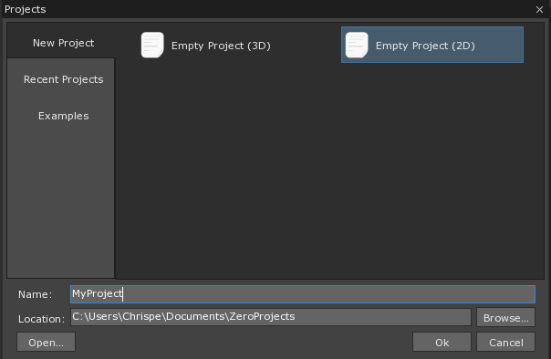
- In the Project Window
Select Project Type 2D or 3D project
- Enter a name for the project in the Project Name area
- Enter a Project Folder directory (if the default is not sufficient) by either typing or clicking the Browse... button
Click the Ok button to create your new project
Windows Overview
Now we will go over some of the Editor Windows and Interfaces. After creating a new project, the editor should look something like this:
{kind=link}
First view as the Zero Editor is opened
Level Window
The Level Window (located in the center of the editor as seen in the Window Overview section above) is where you will manipulate objects to build levels.
Objects Window
Every level contains objects. An object can represent the floor, a wall, enemies, the player, and many other things. There are a few different buttons in the Objects Window that you should know about:
- Eyeball: Toggles visibility of an object only while in the editor. Objects with the eye button disabled will be invisible in the editor, but still visible when the level is played.
- Selection Lock: The small lock button can be turned on and off to toggle the ability to select an object from within the editor.
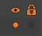
View of the eye and lock button in the Objects Window
Each level has four objects by default:
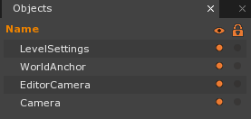
Objects in the level by default
- Click on the object named: LevelSettings
- Once clicked, take a look at the Properties Window on the left
Properties Window
When an object is selected, the properties of that object are accessible from the Properties Window.
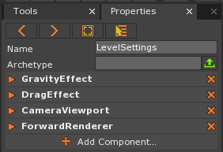
The Properties Window showing the properties of the LevelSettings object
The Properties Window is the primary means for editing or building objects. This is due to an object being comprised of multiple components.
- Component: a chunk of functionality or small bucket of data. An object’s behavior and purpose depends upon what components it contains. Game objects are made up of different components. More details about components will be covered in a future lesson.
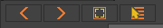
Buttons to help navigate what is shown in the Properties Window
- The arrows allow you to navigate back and forth between recently selected objects.
- The Show Selection button, on first click, pans to the object and on second click, zooms to frame the object in the Level Window.
- The recent button pulls up a drop down list of the recently accessed objects for selection.
Library Window
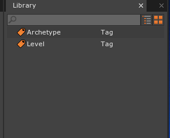
Library Window
Anything you add to the game using the Add command or through drag-and-drop importing is stored as a resource. All resources added to your project can be found in the Library Window. You’ll learn more details about resources in future lessons.
Search Window
This powerful tool allows you to search for various things within the editor. Several uses such as selecting objects, opening archetypes, viewing properties, etc., are accessible from here. For example, if you wanted to quickly access a script file you can just open the search view and type in the name of the script to begin editing. Another important use of the Search Window is for performing commands. See Commands for information.
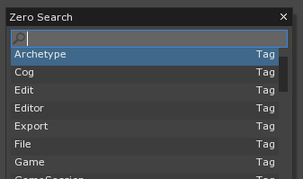
The Zero Search Window for performing commands
There are three ways to pull up the Zero Search Window:
- Click anywhere in the Level Window and press
Space - From any window press
Ctrl+Shift+Space - Click the Zero Search Button in the upper left-hand corner
Reopening Windows & Docking
With its numerous commands the Search Window provides many crucial functions such as those that reopen closed windows and tabs.
Click the x on the Library tab to close the Library Window:
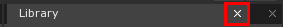
Press
Ctrl+Shift+Spaceto open the Zero Search WindowSearch for the Library command by typing “Library” without any quotes, then hit enter (or click on the Library command directly) to open the Library Window
This same process can be used to reopen many of these key windows. Once reopened, you can use a drag and drop technique to “dock” the window back into the same starting configuration. Docking locations are indicated by the editor with light blue regions as you hover over them. When you find the one you want to dock to, release the Left Mouse Button:
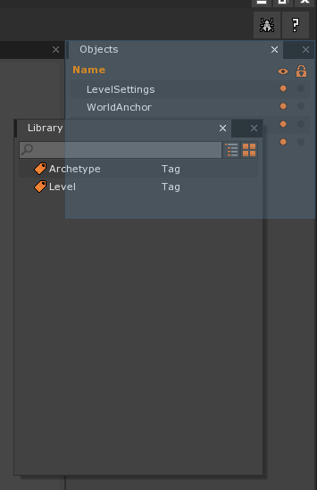
By pressing the Left Mouse Button + Dragging we can pull the Library Window to the upper right-hand corner to dock it
Console Window
- Press the Tilde
~key to open the Console Window
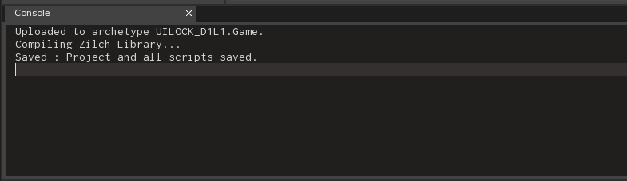
Console Window
- In the Console Window
- Press
Ctrl+Deleteto clear the console
- Press
- In the Level Window
- Press
Space - Enter the command:
SaveProject - Press
Enter
- Press
A message telling you the project was saved is displayed in the Console Window
When console output is referenced in future lessons it will be shown like this:
Console Output:
---------------- Begin Game ---------------
I am player PlayerOne my health is 10
I am player PlayerOne my health is 20
Lesson Structure
In the Lessons instructions are laid out in a specific way to make them easier to understand. For example:
- In the Object Window
- Select the Player object
- In the Properties Window
- Add the RigidBody Component
- Under RigidBody
- Set AllowSleep to: False
Each level of indentation represents a subsection of the window you are already in, where the base is the Editor itself. This makes it easier for you to know where to look in the editor for the information you seek. As the lessons progress some common steps will be cut for brevity, for instance:
- In the Level Window
- Press Space
- In the Search Window
- In the search bar
- Enter the Command:
CreateSprite - Press Enter
- Enter the Command:
- In the search bar
will be shortened to:
- Command:
CreateSprite
This significantly reduces the amount of reading, and while still providing a reference to the full process should you need a refresher.
Game Window
The Game Window is where your game actually runs inside the Zero Engine editor. You can test or play your game (or specific levels) here without having to create an executable.
- Command:
PlayGame
The Game Window tab should appear in a tab next to the Level Window tab:
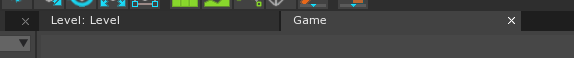
Game Window Tab
The Game Window should not show anything but a blank screen right now because we haven’t added any visible objects to our level yet:
{kind=link}
Game Window displaying empty level
- Close the Game Window by pressing the X button on the Game tab
- You can also press
Escor use Command :StopGame
It is a good practice to close your game window promptly. Editing levels while it a Game Window is open can cause erratic behavior, undefined behavior, or errors. - Click on the Level tab to return to the Level Window
Tools Window
This window contains several useful tools for using the Zero Editor. These tools are for managing various objects within the level. Settings for the current tool being used are also available here. You can switch tools from the drop-down selection or by using hotkeys.
- Click anywhere in the Level Window and press the
Number 1key on your keyboard to switch to the SelectTool. This is a hotkey for switching to the SelectTool.
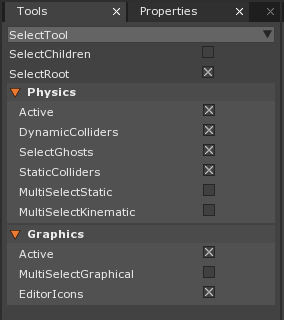
Tools window
Click on the drop-down selection in the tools window to display a list of tools you can use:
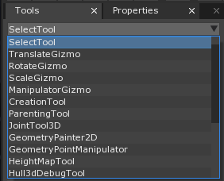
Tools drop-down selection
Tool Bar
The tool bar is located at the top left of the entire editor. Various buttons to perform common actions are located here. Here are some of the toolbar buttons:
{kind=link}
Tool Bar
In order to find out more about the function of each button, you can hover over them to get a pop-up tool tip. You can reach all the same functionality by searching in the Search Window.
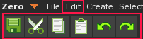
Left most buttons functionality is also found in the Edit Menu item
These provide common functions such as save, cut, copy, paste, undo and redo.
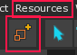
Calls the Add Command to add new resources to your library
Resources will be covered in future lessons.
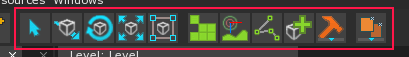
Visual short cuts for many of the tools found in the Tools Window drop down selection
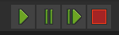
This allows you to affect the playback of your game
These allow you to play, pause, step through frame by frame or stop running your game.